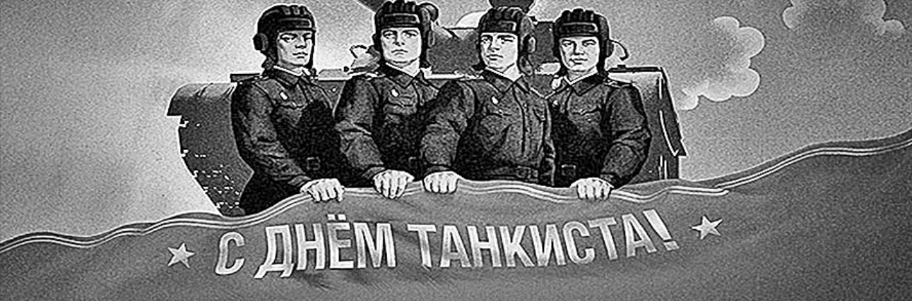
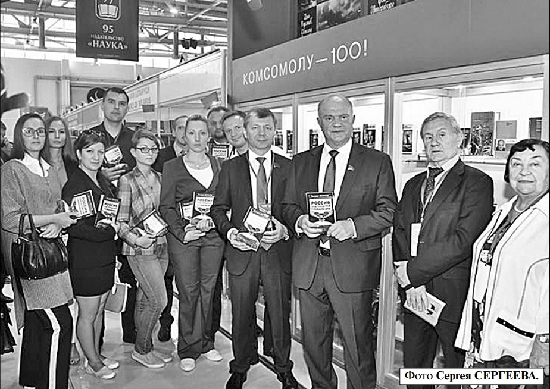
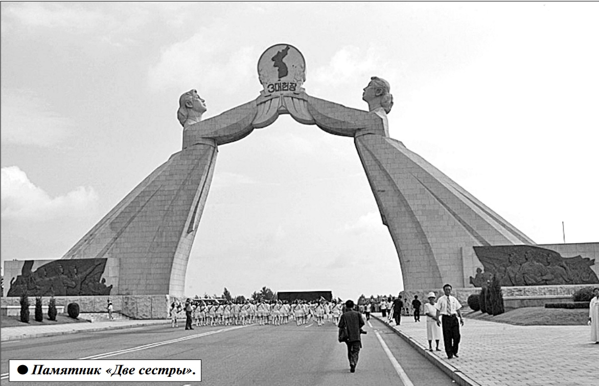

ДЕНЬ ТАНКИСТА учреждён Указом Прези диума Верховного Совета СССР от 11 июля
1946 года в ознаменование больших заслуг
бронетанковых и механизированных войск в разгроме противника в годы Великой Отечественной
войны, а также за заслуги танкостроителей в оснащении Вооружённых Сил страны бронетанко
вой техникой. До 1980 года он отмечался 11 сентября, поскольку в этот день в 1944 году советские
войска добились серьёзных успехов во время проведения Восточно-Карпатской операции. В 1980
году Указом Президиума Верховного Совета
СССР была установлена текущая дата празднования: ежегодно во второе воскресенье сентября.

Открылся книжный форум
5 сентября в Москве, на ВДНХ, открылась 31-я Московская международная книжная выставка-ярмарка.
Это крупнейший и старейший книжный форум в России
и Восточной Европе, заметное событие в культурной
жизни Москвы и России в целом.
ВТОРЖЕСТВЕННОЙ церемонии открытия выставки-ярмарки
принял участие Председатель ЦК КПРФ Г.А. Зюганов. Он пожелал участникам форума успешной работы и выделил те
направления, которые, по его мнению, должны стать приоритетными в деятельности книгоиздателей. В частности,
лидер КПРФ рассказал, что
договорился с издательством «Молодая гвардия» о выпуске книги, посвящённой народному артисту СССР И.Д.
Кобзону. Она будет представлена в рамках знаменитой серии «Жизнь замечательных людей».
В ходе осмотра экспозиции выставки Г.А. Зюганов посетил стенды издательства «Молодая гвардия» и издательства
«Эксмо». Напомним, что
в издательстве «Эксмо» недавно вышла новая книга лидера КПРФ «Россия под прицелом глобализма».
Г.А. Зюганова сопровождали заместитель Председателя ЦК КПРФ
Д.Г. Новиков, секретари ЦК КПРФ М.В. Дробот и В.П. Исаков
«...И наши люди мужества полны»
В годы Великой Отечественной войны даже враг
неоднократно указывал на высокое качество советских танков. Но, как известно, чтобы танк успешно
действовал в бою, необходимы умелые и мужественные танкисты. В связи с этим следует привести хотя
бы несколько примеров храбрости и воинского мастерства советских танкистов в минувшей войне.
Т АНК лейтенанта Ивана
Бутенко 6 июля 1943 года в
бою под Белгородом уничтожил 3 танка противника, в том
числе 2 — тараном. Танк младшего лейтенанта Ивана Голуба
31 декабря 1943 года под Житомиром уничтожил 5 «тигров»,
2 «пантеры» и 5 орудий. Танк
сержанта Алексея Данилова 30
июня 1944 года ворвался в город
Борисов и в ходе 16-часового
боя разгромил штаб вражеской
части, комендатуру, подбил
2 танка и освободил около двухсот советских военнопленных.
Танк младшего лейтенанта Василия Ермолаева 7 декабря 1943
года в бою под Житомиром подбил и сжёг 6 вражеских танков, а
когда сам был подбит, то совершил «горящий» таран, уничтожив ещё один танк. Экипаж танка лейтенанта Семёна Коновалова 13 июля 1942 года в бою под
Ростовом-на-Дону уничтожил
16 танков, 2 бронеавтомобиля и
много другой техники врага. 31
января 1945 года в Польше при
форсировании Одера танк младшего лейтенанта Павла Обуза
уничтожил 6 танков, 2 штурмовых орудия и 3 БТР. Танк лейтенанта Ивана Мозгового 27 июня
1944 года в бою под Минском
подбил 7 танков, уничтожил
2 орудия и 3 БТР.
Танк сержанта Григория
Найдина 25 июня 1941 года в
бою на территории Литвы
уничтожил 10 танков и несколько противотанковых орудий. Танк, механиком-водителем которого был старший сержант Григорий Налимов, 17
февраля 1945 года в бою на территории Чехословакии уничтожил до 10 танков и 7 БТР.
Экипаж танка младшего лейтенанта Георгия Сорокина 3 августа 1944 года в бою на территории Польши уничтожил 4
танка, 20 БТР, а когда сам был
подбит, то совершил «огненный» таран по танку врага. 15
января 1945 года в бою также на
территории Польши танк лейтенанта Ивана Хиценко, ведя
бой против 10 тяжёлых танков
врага, подбил 5 из них.
3 декабря 1941 года в ходе
Московской битвы танк старшего лейтенанта Павла Гудзя
вёл бой с 18 танками врага,
подбив 10 из них. Экипаж танка старшего лейтенанта Зиновия Колобанова в бою под Ленинградом за 30 минут подбил
22 танка. 3 советских танка роты старшего лейтенанта Владимира Хазова в боях на Юго-Западном фронте 14—15 июня
1942 года уничтожили 31 танк.
Экипаж танка старшего лейтенанта Дмитрия Лавриненко
за 2,5 месяца боёв в 26 сражениях уничтожил 52 танка — это
рекорд среди танкистов СССР.
Так, в ноябре 1941 года в бою
на Волоколамском направлении экипаж Лавриненко, ведя
бой с 18 танками врага, подбил
6 из них.
Уникальный подвиг совершил экипаж танка Т-28. 3 июля
1941 года этот танк ворвался в
занятый немцами Минск и открыл огонь по врагу. В результате он уничтожил и подбил 10
танков и бронемашин, 14 грузовиков, 4 артиллерийских расчёта и уничтожил около 60 гитлеровцев.
В ходе минувшей войны советские танкисты совершили
205 таранов. Первый из них
был совершён уже 22 июня 1941
года экипажем лейтенанта Павла Гудзя на территории Львовской области.
Среди таранщиков были и
свои «рекордсмены»: Николай
Томашевич совершил в бою
3 тарана, а всего на его счету
4 тарана. Танк капитана Алексея Босова в ходе Московской
битвы в бою под Истрой 18 ноября 1941 года совершил в одном бою 4 тарана.
Следует добавить, что первым
в минувшую войну подвиг, носящий имя матросовского, совершил танкист младший политрук
Александр Панкратов. Это произошло 24 августа 1941 года.
О мужестве наших танкистов
свидетельствовали и враги.
Один из них сообщает, что 24—
25 июня 1941 года у города Расеняй (на территории Литвы недалеко от границы с тогдашней
Восточной Пруссией) совет
ский танк, находясь в тылу врага, на два дня перерезал его
коммуникацию, уничтожив 12
грузовиков, прервав снабжение
6-й дивизии врага, уничтожив
зенитку и два других орудия.
Вот ещё более потрясающий
эпизод. Немецкий корреспондент сообщил увиденное своими
глазами. Советский танк был
подбит, однако один из членов
экипажа, высунувшись из башни, продолжал вести огонь из
пистолета по гитлеровцам. Когда он был убит и враги подошли,
то они увидели, что у смельчака
были оторваны ноги.
Кислотное удушье
Второй месяц в городе Армянске Республики Крым происходят
выбросы в атмосферу
отравы из накопителей
завода «Титан».
ПЕРВЫЕ жалобы жителей на странный запах в
воздухе были зафиксированы ещё в начале августа.
Запах усиливался. Ситуация
катастрофически начала ухудшаться с 24 августа. С 27 на 28
августа ночью выбросы в атмосферу усилились. Люди стали
массово жаловаться на першение в горле, жжение в носу и
затруднение дыхания, на тошноту, рвоту, повреждение слизистой оболочки глаз, головные боли. У детей поднималась температура и появились
высыпания на коже. 28, 29 августа начались массовые обращения в поликлинику, где детям ставили диагноз ОРЗ или
аллергия. Признавать, что
симптомы связаны с ухудшением экологической ситуации,
медики отказывались.
27 августа в Армянск прибыла межведомственная комиссия по изучению ситуации в городе, а прокуратура приступила
к проверке. В тот же день появились и первые сообщения в
СМИ о неблагополучной экологической ситуации в городе.
Металлические предметы
покрылись ржавчиной, мебель
и фурнитура в квартирах — бурым маслянистым налётом.
29 августа официальные власти продолжали заявлять, что
превышений допустимых концентраций вредных веществ не
выявлено. Это была ложь, так
как запах в воздухе усиливался,
значит, с каждым днём росло содержание этих самых веществ.
31 августа Армянск посетил
глава Республики Крым Сергей
Аксёнов. Его пресс-служба официально заявила, что жизни и
здоровью жителей города ничего
не угрожает, поскольку анализы
(водные, воздушные и почвенные) говорят о том, что якобы
экологическая ситуация остаётся в пределах допустимых норм.
Одновременно в срочном
порядке город по ночам стали
поливать содовым раствором.
Люди очень обеспокоены бездействием властей и замалчиванием ситуации. Звонили и
писали в различные инстанции, в том числе и на «горячую
линию» президенту. Официальная версия властей гласит,
что ситуация связана с кислотонакопителем завода «Крымский Титан». Сбросы шли в
озеро Сиваш. В результате повышения температуры и отсутствия осадков данный водоём
обмелел и начал пересыхать, в
связи с уменьшением воды
увеличилась концентрация
кислоты, пары стали подниматься в воздух и отравлять окружающую территорию.
В ночь со 2 на 3 сентября усилилось зловоние в воздухе, а утром 3 сентября город был попрежнему в маслянистом налёте. В один вечер в аптеках исчезли ватно-марлевые повязки.
Только 4 сентября глава Республики Крым принял решение о приостановке работы завода на две недели, объявив каникулы в школах. Срочно начали вывозить детей из города.
На сегодняшний день вывезены более 2000 детей.
К сожалению, предоставленные условия проживания в различных санаториях Республики
Крым не соответствуют санитарным нормам. Так, например, одна из мам ребёнка пишет: «Санаторий «Голубая волна» (г. Саки). Это ужас! Поселили сюда с маленькими детками.
Грязь и антисанитария. Дышать
нечем, духотища и воняет».
А вот письмо из Евпатории,
где тоже размещены дети из
Армянска: «Лагерь имени
Юрия Гагарина! Здесь сумку
страшно на пол положить, не
говоря уже о ребёнке, которому
год и 9 месяцев! Питание рассчитано на детей от 7 до 16 лет!
Напрашивается вопрос: что
здесь делать детям нашего возраста?! Мы уехали от химии, а
приехали в номера с тараканами, пылью, грязью, мусором,
облёванными стенами, не говоря уже о постельном белье,
состоянии мебели и комнаты в
целом! Хорошо, что постельное бельё взяли с собой! Неужели мы заслуживаем такое к
себе отношение?!» И таких писем много. Заметим, что беременным женщинам не предложили помощь в их эвакуации
из поражённого города.
На данный момент в городе
продолжает работу штаб по
чрезвычайным ситуациям, а
межрегиональное управление
Роспотребнадзора по Республике Крым и г. Севастополю
выдало рекомендации уже всему населению Республики
Крым, как вести себя в случае
появления неприятного едкого
запаха в атмосферном воздухе,
першения в горле и т.д.
Экологическая ситуация в
городе Армянске на сегодняшний день не взята под контроль, и все надеются на приезд специалистов из материковой части России. А жители города продолжают дышать заражённым воздухом

Дорогой к свету
Наверное, есть что-то знаменательное в том, что 70-летие со дня
образования Корейской Народно-Демократической Республики выпало на воскресенье. Свой большой праздник наш добрый восточный сосед отметит в этот выходной.
С 9 сентября 1948 года КНДР ведёт отсчёт новой истории, давшей
старт социалистическому возрождению этой земли и её народа, незадолго до этого с помощью Советского Союза освободившегося от колониального японского гнёта.
Страна народной демократии, пройдя под руководством Трудовой
партии Кореи через великие испытания, добилась за эти годы многого.
Достаточно сказать, что из некогда аграрного захолустья планеты
КНДР одной из первых на Земле прорвалась в космос, из темноты повальной безграмотности заблистала ныне лучами всеобщего образования и передовой науки.
Все, кому довелось бывать в этих живописных краях Корейского полуострова, познакомиться с его мудрым народом, всегда привозили оттуда
массу впечатлений. Ими в канун юбилея страны делится с нашими читателями секретарь ЦК КПРФ, первый заместитель Председателя ЦС СКП—
КПСС, координатор депутатской группы по связям с Верховным народным
собранием КНДР Государственной думы Казбек Тайсаев. И северокорейский орден Дружбы на груди коммуниста даёт ему такое право сполна:
С О МНОГИМИ
странами я знаком,
но такого трепетного отношения к своей свободе,
как в КНДР, редко где встречал. Корейцы остаются единственным на планете народом, который разделяет граница. Один из самых почитаемых в Северной Корее памятников так и называется «Две
сестры» (на снимке). Символизируя своё единство, они прямо над пробегающей между
ними дорогой протягивают
друг другу руки. Основатель и
первый руководитель КНДР
Ким Ир Сен страстно мечтал,
чтобы корейцы жили вместе.
В этом же направлении вели
и ведут политику и его продолжатели Ким Чен Ир и
Ким Чен Ын. Надеюсь, что
воссоединение всё-таки состоится.
— Оно произойдёт по формуле: одна страна — две системы?
— Именно. Хотя, полагаю,
что ведущая роль здесь останется за северокорейским социально-экономическим укладом. К сожалению, пока
единение невозможно из-за
жёсткой позиции, занимаемой
Соединёнными Штатами. Их
такое положение в регионе не
устраивает. За мощными фортификационными сооружениями, возведёнными, заметьте,
«южанами», с одной стороны
стоят корейские солдаты, которых сзади подпирают американские вояки и силы НАТО.
А кто стоит за солдатами с другой стороны? Разве что женщины, старики и дети, которых они защищают. На КНДР
ополчился практически весь
капиталистический мир.
— И Россия, недавно присоединившаяся к введённым против народной республики санкциям, фактически играет в ту
же грязную игру на удушение
социализма.
— В этом-то и беда. Когда
дело касается России, мы первые возмущаемся, что, дескать,
языком санкций в мире разговаривать нельзя. А сами?..
— Как же это отражается на
деле?
— А вот так. Пришлось недавно побывать в северокорейской глубинке. Гляжу, крестьяне там пашут… на волах.
Западные журналисты тут же
подсуетились: дескать, вот
вам, пожалуйста, куда завёл
ваш социализм — аж в XVIII
век! Одного только замечать
не хотят, что рядом с полями в
ангарах стоят ультрасовременные тракторы местного, кстати, производства. Но моторы
их сегодня молчат. Крестьяне
сетуют, что горючее стало дорого: своей-то нефти в республике нет. Её поставки в КНДР
сейчас перекрыты санкциями.
Ещё пример. Не так давно
многие корейцы официально
по квотам работали на стройках России. Но теперь на нашей границе для них замок,
перекрывший один из источников поступления в Северную Корею валюты. Многое
от этого потеряла и наша страна. Ведь качество возводимых
корейцами объектов что в
Москве, что в Петербурге, что
на Дальнем Востоке всегда
было высочайшим. Я везде, в
том числе и в российском
МИД, по поводу санкций говорю, что нельзя этого делать.
Свою ядерную программу Северная Корея свернула — пора
успокоиться. Тем более первыми они ни на кого нападать
и не думают. Так нет, мы всё
смотрим в рот американцам…
У нас с Северной Кореей
общая граница. Не зря в своё
время СССР здорово помогал
соседу. Советское руководство
хорошо понимало, что Корейская Народно-Демократическая Республика — единственный надёжный наш оплот в
юго-восточном регионе. На
всех международных площадках она всегда голосовала за
нашу позицию. Даже когда
Россию нужно было поддержать по вопросу Крыма,
КНДР без колебаний это сделала. А мы им такую подножку!.. Помните, как ещё Ельцин предлагал бомбить Северную Корею? Этот негодяй сделал всё, чтобы испортить наши отношения.
Однако и тогда руководство КНДР проявило мудрость, оставшись верным заветам Ким Ир Сена, который
особую важность придавал
дружбе с народами СССР, и
особенно с русскими, как
близкими корейцам по духу,
по стремлению к справедливости. Кстати, самый широко
изучаемый иностранный язык
в Северной Корее — по-прежнему русский.
— Неужели с нашей стороны
ни одного шага навстречу?
— Есть хороший проект
строительства моста, который позволил бы открыть
между нашими странами автомобильное сообщение. Тогда развитие этой территории
пошло бы куда быстрее. Пока
же всё здесь на стадии переговоров.
— Судя по тому, как рисуют
Северную Корею российские
буржуазные СМИ, добрых перспектив не просматривается.
Ясное дело, КНДР для их хозяев — идеологический противник, поэтому в ход идут и ложь,
и подтасовки.
— Когда нам рассказывают,
что полки северокорейских
магазинов пусты, то это неправда. Продуктов там сейчас
в достатке, причём все они
высочайшего качества. В детских садах, например, меню
для детишек состоит из тридцати разнообразных блюд. И в
ресторане вам всегда на планшете предложат большой выбор блюд.
— Да и образ корейского лидера тоже порой искажается до
карикатурности.
— На самом деле, Ким Чен Ын
— великий руководитель. Это
очень умный и грамотный человек с прогрессивными взглядами, получивший великолепное образование в своей стране
и в Европе. И жена у него просто красавица. Я был очевидцем того, как они вместе поехали смотреть новостройки. А
предыстория такая. Как-то раз
Ким Чен Ын на встрече с сотрудниками университета имени Ким Ир Сена узнал, что у
профессорско-преподавательского состава проблемы с жильём. Он тут же дал команду
возвести в столице целый квартал, состоящий из десятков высотных зданий. Не поверите,
но через год весь он был уже заселён, став одним из самых
красивых мест Пхеньяна. А какие там квартиры! По 200 квадратных метров. В них уже заранее установлена и мебель, и посуда на кухне, и необходимая
бытовая техника. Всё это вместе с ключами работники вуза
получили бесплатно.
На глазах меняется страна:
растёт ввысь этажно, повсеместно ширится спортивными
площадками и 150-тысячными стадионами в городах, библиотеки полны читателей. У
многих в руках планшеты и
смартфоны, причём своих северокорейских моделей, не
уступающих мировым образцам. Но предпочтение люди,
как я заметил, отдают всё-таки традиционной книге. Считают, что в них души больше…
— Значит, ленинское «Учиться, учиться и ещё раз учиться»
для корейцев сегодня главное?..
— Так и есть. Власти вкладывают в просвещение большие средства и хорошо стимулируют людей чаще открывать
учебники. Чем выше у человека уровень образования, тем
больше у него льгот. Знания —
главная опора экономики и
обороны республики.
Я когда-то служил в Ракетных войсках стратегического
назначения. Знаю, насколько
там всё сложно. Нам, депутатам Госдумы, корейские товарищи показали, чем располагает в этом плане КНДР. Смею
заверить: северокорейская ракетная техника самого передового уровня. Впрочем, с другой космос к себе и не пустит.
А на его орбитах летают, кажется, уже четыре северокорейских спутника. Американцы недаром перепугались, остановив свою военную эскадру
на подходе к Корейскому полуострову после испытательного запуска северокорейской
баллистической ракеты.
— Но это военная отрасль,
которой, понятно, всегда уделяют особое внимание. А как
обстоят дела в мирной промышленности?
— Я специально возил на
многие производственные
объекты депутатов из «Единой России», чтобы они увидели: это вовсе не отсталые
предприятия, как они это себе
представляли. На одном из
них делают шёлковую продукцию, начиная от нити шелкопряда до готового изделия. У
нас подобные вещи баснословных денег стоят. Пока корейцы не пускают свой шёлк
на внешний рынок. Хотят
сначала насытить внутренний, чтобы все их женщины
стали нарядными. А затем будут продавать и за рубеж, как
сказали нам на шёлковой фабрике. Побывали мы и на
обувной. Наши депутаты диву
давались: таких кроссовок поискать!
Да, зачастую на предприятиях используется и ручной
труд. Могли бы и роботов поставить, но, учитывая экономическую блокаду, сейчас корейцы думают о каждом человеке, давая возможность всем
получить работу.
— То есть широкое использование ручного труда отнюдь не
показатель технологической
отсталости промышленности
КНДР, как это подаётся зачастую либеральной пропагандой?
— Ни в коем случае. Мы зашли на завод, где делают кабель, предназначенный для
прокладки по морскому дну.
Заказов у предприятия на год
вперёд. Французы и итальянцы там в очереди стоят. Закупают кабель, а потом поверх
его оболочки наворачивают
ещё одну, на которой без зазрения совести штампуют: «Made
in Italy», «Made in France». Так
что знайте: весь этот хвалёный
европейский кабель делается в
Северной Корее.
— А какова организация труда и быта на этих социалистических предприятиях?
— Работают на том же кабельном заводе 800 человек в
три смены. Рядом большие
красивые здания, футбольное
поле, стадион, банный комплекс с бассейном. В своё время Ким Чен Ын подписал специальный указ о строительстве на всех предприятиях таких
комплексов. Мы сначала не
могли понять, куда приехали.
Сопровождающие объяснили,
что всё это построено для рабочих завода. Квартиры заводчане получают бесплатно.
Под боком — детский сад. Зашли и туда. Кормят малышей
на любой выбор и очень вкусно. Все продукты — корейского производства. Побывала
наша делегация и в школе.
Современные оборудованные
классы, кругом порядок и чистота. Дошла очередь и до заводских цехов. Условия труда
там просто великолепные. Тут
же, на заводской территории,
и учебные комнаты, в которых
работники предприятия пополняют свои знания. Образование можно получить всех
уровней: начальное, среднее и
высшее. Если ты кандидатскую пишешь, к твоим услугам интранет, который связан
с Академией наук, с ведущими
институтами страны.
Разговорились с директором завода. Он является ещё и
депутатом парламента Северной Кореи и входит в депутатскую группу дружбы с Россией. «Я тоже учусь, — рассказывает он, — потому что если
инженеры будут знать больше
меня, то завтра я потеряю эту
работу.
Дружба народов